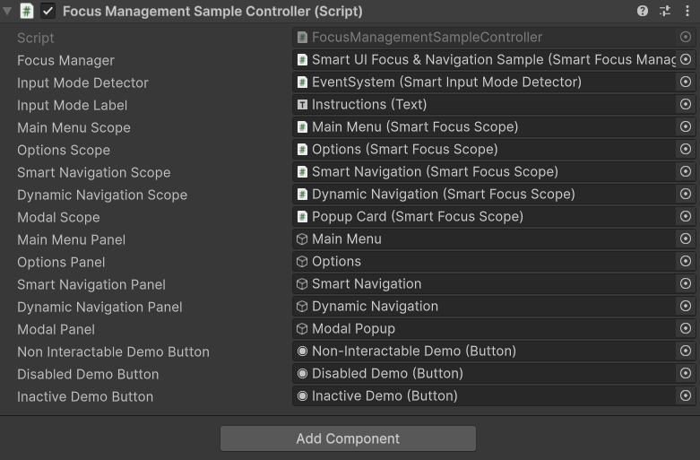
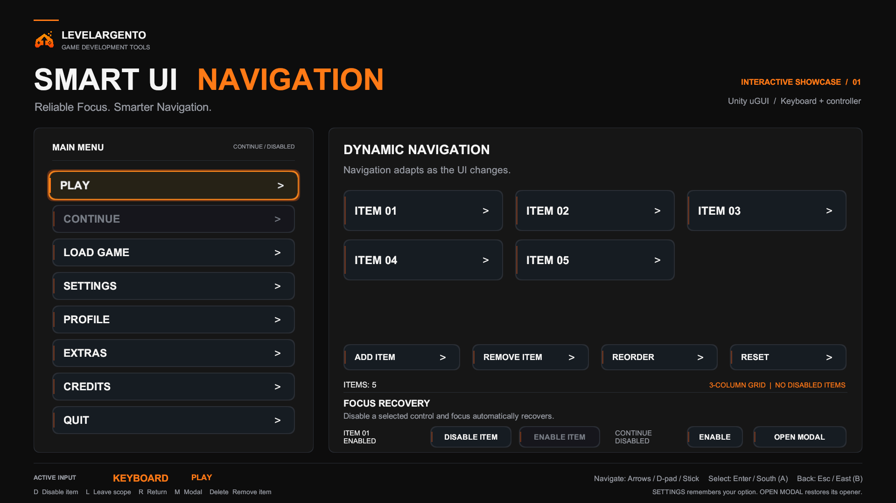
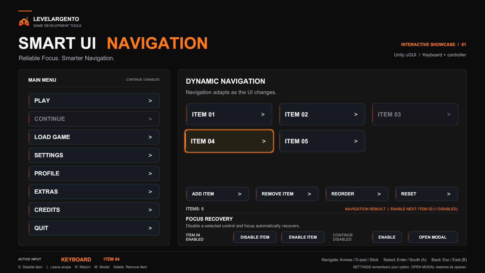

Sample scene¶
Three samples are included: the minimal Quick Start, the technical Focus Management Sample, and the polished game-menu Navigation Showcase.
Quick Start¶
Open:
Assets/LevelArgento/SmartUINavigation/Samples/QuickStart/QuickStart.unity
This is the smallest working focus setup. Enter Play Mode and use arrow keys, D-pad, or left stick to move between PLAY, OPTIONS, and QUIT. Use Enter or the gamepad south button to submit. Mouse interaction remains available.
Inspect UI Manager to see the Focus Manager and Input Mode Detector with their required references assigned. Inspect Main Menu to see the Focus Scope, PLAY as Default Selection, and Remember Last Selection enabled. The scene reuses the Focus Management sample's proven Input Actions and uses Unity Automatic navigation; it does not require a sample controller, a sample assembly, or a Navigation Group.
Focus Management Sample¶
Open:
Assets/LevelArgento/SmartUINavigation/Samples/FocusManagement/FocusManagementSample.unity
The scene includes an EventSystem, InputSystemUIInputModule, input actions, focus components, navigation components, and a camera. Enter Play Mode to exercise the runtime behavior.

Controls¶
- Arrow keys, D-pad, or left stick: navigate.
- Enter or gamepad south button: submit.
- Mouse movement and clicks: pointer interaction and mode switching.
The footer displays the current Mouse, Keyboard, or Gamepad input mode.
Main Menu¶
The Options button receives default focus when Play Mode starts. Move to another Main Menu control, enter another panel, and return to observe per-scope selection memory.
Open Modal Popup, then close it. Focus returns to the exact Main Menu control that opened the popup while that control remains valid.
Options / recovery¶
To verify remembered selection without selecting Back first:
- Open Options, navigate to Disable My Button Component, and leave it selected for at least one frame without submitting it.
- From code, call the sample controller's public
ShowMainMenu()method directly. This leaves the Options scope without changing EventSystem selection to Back first. - Call
ShowOptions()directly in the same way. - Confirm that Disable My Button Component, rather than the default control, is selected again.
Use the first three demonstration buttons in order. They make the current selection non-interactable, disable its Button component, or deactivate its GameObject. In keyboard or gamepad mode, the focus manager recovers to another valid control. Reset Recovery Buttons restores the demonstration controls.
Smart Navigation¶
This section uses an intentionally irregular arrangement. Navigate in all four directions to inspect the generated, bounds-aware routes.
The Profile control demonstrates manual overrides:
- Up is
None. - Left is
Explicitto Apply. - Down and Right remain
Auto.
Dynamic Navigation¶
The dynamic section generates eight item buttons at runtime. Use its toolbar to:
- add or remove an item;
- disable or re-enable an item;
- shuffle sibling order; and
- switch between a one-column vertical list and a three-column grid.
Navigate after each change. Invalid controls are skipped, links follow the updated visual layout, and the ragged final grid row keeps its row/column boundaries. Submitting a generated item removes it and demonstrates focus recovery.
Suggested device pass¶
- Start with keyboard and visit every panel.
- Repeat with a gamepad, including left-stick and D-pad input.
- Move and click the mouse, then return to keyboard or gamepad input.
- Confirm the footer mode changes and focus remains usable according to the active input mode.
Navigation Showcase¶
Open Assets/LevelArgento/SmartUINavigation/Samples/NavigationShowcase/NavigationShowcase.unity for a black-and-orange game menu with a runtime-generated, three-column Dynamic Navigation panel. It demonstrates focus recovery, remembered selection, modal restoration, ragged-grid navigation, dynamic rebuilding, and input mode detection.

- Play receives default focus in the vertical menu. Navigate with arrow keys, D-pad, or left stick; move Right to enter the dynamic area. Continue is intentionally non-interactable.
- Profile demonstrates direction overrides: Left is
None, Up isExplicitto Settings, and Down/Right remainAuto. - The dynamic grid starts with five items. Add Item creates another selectable, up to nine visible items. Reorder swaps alternating adjacent pairs in the actual sibling order, moving items through middle positions as well as both ends. Reset restarts this deterministic sequence. Navigation rebuilds from the updated layout; incomplete rows retain their column boundaries.
- Remove Item removes the last selected grid item (initially Item 01). Delete removes the currently focused item without first selecting a toolbar button. The count and brief Navigation Rebuilt notice reflect each change.
- Click or focus a grid item, then use Disable Item in Focus Recovery. The sample targets the remembered item, not the command button. Disabling or removing selects the next valid item in the current grid order, or the nearest valid predecessor when none follows. Repeated disabling stays in the grid until no valid items remain; only then does the sample request normal scope fallback. This local selection uses the manager's public APIs without changing its global recovery policy. Enable Item restores the most recently disabled item still waiting, including its focus. The status shows the next item to restore and how many remain, or No Disabled Items. Removing an item clears its pending restoration; Reset clears all pending restorations. D also disables a focused menu or grid item.

- The Continue status and Enable / Disable action control the initially unavailable menu button. No save-game state is involved.
- Open Settings, choose Audio, Video or Controls, then Close Settings and reopen it. The scope restores the exact previous option. The close button is outside the remembered scope and does not replace that option. Esc / gamepad east or L also closes Settings; R reopens it.
- From the main scope, L or Esc / gamepad east still leaves the menu. R or Return To Menu restores its remembered selection.
- Open Modal, M, or any available menu option other than Settings opens the modal. Cancel or confirm restores the exact opener. Esc / gamepad east also closes it. Menu options do not launch a game or quit the application.
- Reset restores the original five items in order, re-enables demonstration controls, and selects Play. The footer shows the current input mode, selected control, and shortcuts; mouse and touch use the shared sample UI actions.
This scene reuses the FocusManagement sample's Input Actions, rounded sprite, audio, and feedback components. Keep both sample folders when using it.